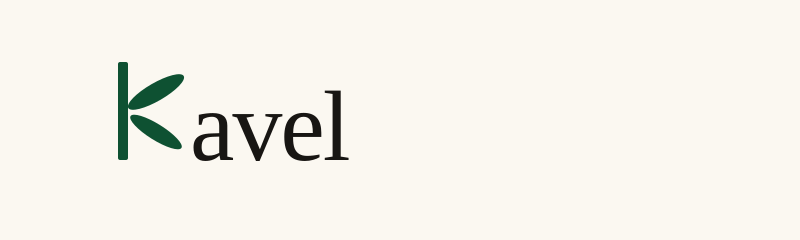
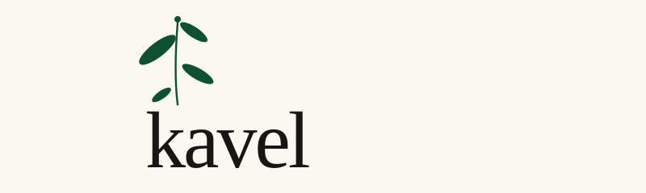
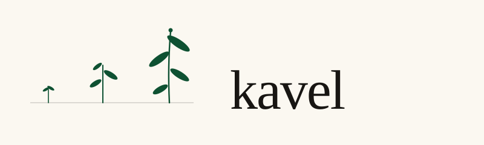
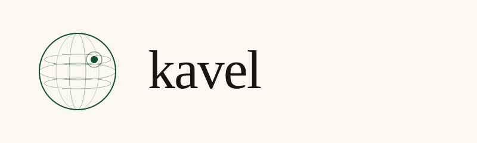
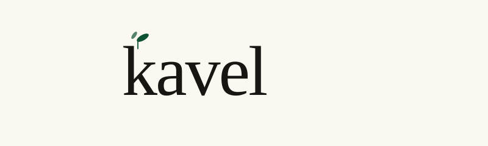
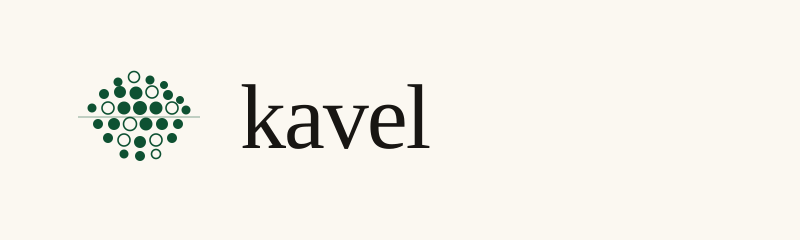
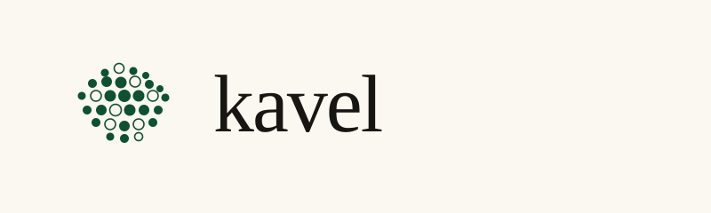
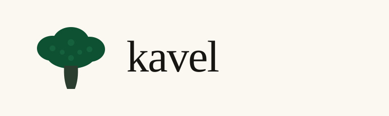
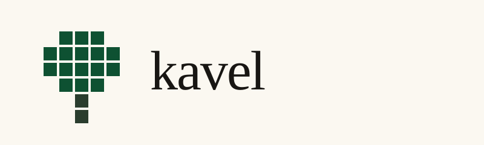

Logo mockups · round 4 · sprout iterations
Iterating on direction E (sprouting wordmark) — three takes on "more plant, more growth". Earlier rounds kept below.

5a · k IS the sprout
The lowercase k itself is rebuilt as a plant: vertical stem in emerald, the two diagonal arms replaced by leaf shapes. Then "avel" follows in Boska serif, dark ink. The sprout is no longer an accent on top of the letter — it's the letter.
Reads as: letter-as-organism · custom monogram · most distinctive.

5b · sprout, but loud
Same composition as the original sprout-wordmark, but the sprout is now substantial — a curved stem with four leaves alternating sides and a top bud, climbing well above the wordmark. The wordmark drops slightly to make room.
Reads as: mature plant · botanical illustration · sprout dominant.

5c · seedling → mature
Three sprouts of increasing size planted on a thin ground line: a seedling (two cotyledons), a young plant (three leaves), and a mature sprout (four leaves + bud). Tells the climate-contribution story: small kavel today, planted alongside a bigger one tomorrow.
Reads as: growth narrative · seed-to-tree · time/scale storytelling.
Round 3 · greener planet (for comparison)

D · cartographic · audit-grade
Outlined globe with latitude and meridian arcs (the audit-credible way to say "earth"), with one solid emerald dot and a halo ring at roughly Netherlands position. Reads as: "your kavel, geo-located on the planet that benefits."
Reads as: globe · marker pin · audit-grade ESG visual.

E · typographic · quiet sprout
Wordmark only, with two small emerald leaves growing from the top of the k's ascender — a quiet sprout, not a sticker. The k is the stem. Most restrained of the three; the greenness lives in the leaf, not the composition.
Reads as: growth · sustainability · typographic flourish.

F · planet · floret-as-globe
The round-2 floret cluster, but a thin emerald line runs through the middle as an equator. Reads as a green planet textured with kavels — the broccoli concept folded into the planet concept rather than competing with it.
Reads as: green planet · textured globe · bridges round 2.
Round 2 · broccoli (for comparison)

A · pointillist · soft
~30 small filled circles arranged into a broccoli-crown silhouette, with a stylised stem below. Reads as a microscopic view of the florets — every one a discrete unit, like ledger entries that happen to add up to something delicious.
Reads as: broccoli crown · cluster of small atomic units · texture-forward.

B · iconic · woodcut
Three overlapping ellipses for the crown, blended into a wider base, with a tapered stem. A few darker accent dots suggest the bumpy texture without becoming busy. Most legible at favicon size. The "Albert Heijn produce sticker" of the three.
Reads as: market-stall sign · vegetable mark · most instantly recognisable.

C · geometric · bridge
The original parcel-grid concept folded into a broccoli silhouette: a 5×4 grid of square cells forms the crown, with two stacked olive cells beneath as the stem. Holds onto the audit-register feel (cells = ledger rows) while reading as a vegetable at any size.
Reads as: parcel grid + broccoli · geometric food · most distinctive.